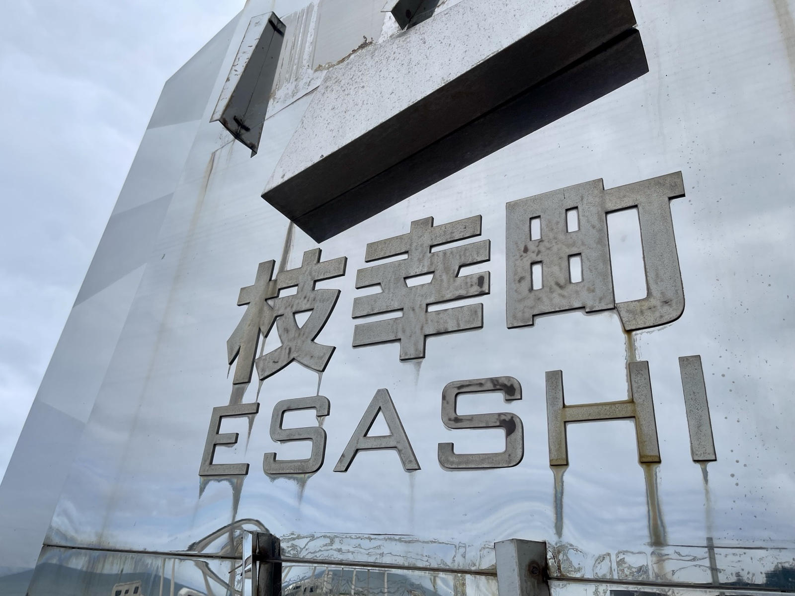
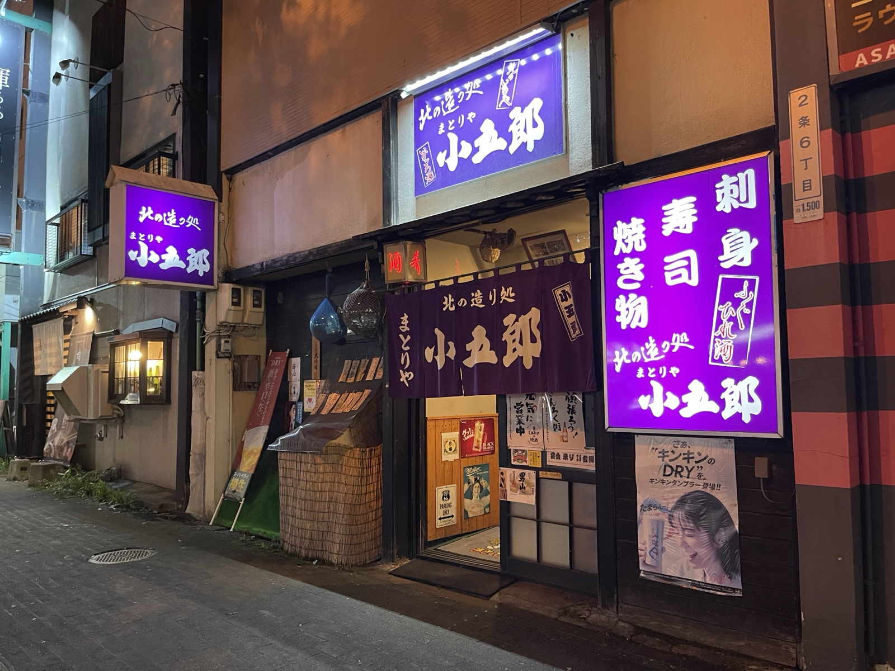

コスタリカとはどんな国？｜自然・治安・暮らしを元在住者が紹介
中米にある小さな国、コスタリカ。面積は日本の九州と四国を合わせたくらい（5万1,100㎢）しかないが、世界の生物種の約5%がここに生息している。

イラス火山の行き方と見どころ｜火口湖が見えなかった日
コスタリカの紋章に描かれた有名な火山へ。緑色の火口湖を目当てにバスで2時間かけて頂上へ向かったら、なにもありませんでした。

コスタリカのクリスマスと年越し｜タマル・爆竹・光の祭典
コスタリカは中米の中でも比較的豊かな国で、クリスマスは一大イベントだ。大多数がカトリック信者であり、文化の深いところにキリスト教が根付いている。

コスタリカ日本人学校とThe Color Run｜サンホセで見た子どもたちと祭り
海外赴任に子どもが付いて来た場合、教育はどうするのか——そんな親の頼れる味方が、各国にある日本人学校だ。

マヌエル・アントニオ国立公園へ｜セマナ・サンタのコスタリカ旅行
Semana Santa（セマナサンタ）をご存じだろうか。

コスタリカ・中米料理まとめ｜ガジョピント、セビーチェ、ライス＆ビーンズ
日本人が想像する以上に、主食を米とする国は多い。また中国人が世界中で生活している影響もあり、意外と醤油などの調味料を買うことも容易だ。今回は、中米で食べた料理をいくつか紹介したい。

コスタリカで理学療法士として働いた話｜簡易装具で歩けるようになった患者
コスタリカには脳卒中患者のための長期リハビリテーション施設が不足している。多くの患者が退院後、自宅で寝たきり状態になってしまうという現実がある。

カニョネグロとモンテベルデ旅行記｜野生動物を探す年末年始
2014年末、サンビートを出て北へ向かった。カニョネグロでボートツアー、ラ・フォルトゥナを経由してモンテベルデへ。ナマケモノ、アオマユハチクイモドキ、ナイトツアー——コスタリカの野生動物を一気に詰め込んだ旅だった。

アリバダを見にオスティオナルへ｜ヒメウミガメ集団産卵に間に合わなかった話
ヒメウミガメの集団産卵「アリバダ」。知らせを受けて14時間以上バスに揺られて現地へ向かったら、砂浜には卵の殻しか残っていなかった。

コスタリカ10年ぶり再訪｜変わったサンホセと変わらないピルセンの味
2025年1月、コスタリカへ10年ぶりに戻った。高層ビルが増え、街が整備されていた。サンビートには行けなかった。でもピルセンは変わらずうまかった。

コスタリカからニカラグアへ国境越え｜TICA BUSでオメテペ島へ
コスタリカからニカラグアへ。初めての国境越えは、長距離バスで向かった。

オメテペ島観光を1日で巡る｜オホ・デ・アグアと火山島の見どころ
土曜日の夕方にオメテペ島に到着した。翌日曜日はバスが動いていないため、ガイドを雇うことにした。約40ドル——少し高いと思ったが、島の道を一人でバイクタクシーで回るよりずっと効率がいい。

グラナダ観光と革製品探し｜ニカラグアの植民地都市を歩く
オメテペ島を朝6時のフェリーで出発。フェリーの中では鶏が運ばれていた——「後で食べる用だよ」とガイドが教えてくれた。中米らしい光景だ。向かうはグラナダ。

マナグア観光と友人との再会｜ニカラグアの首都で過ごした一日
グラナダを後にして、首都マナグアへ向かう途中、マサヤという町に立ち寄った。

レオン観光｜革命の記憶とルベン・ダリオの街を歩く
マナグアから長距離バスに乗り、ニカラグア北部の都市レオンへ向かった。レオンはスペイン語でライオンを意味する。名前の通り、町の中心にあるレオン大聖堂にはライオン像が鎮座していた。

フロール・デ・カーニャ工場見学｜ニカラグアのラム酒を味わう
レオンを離れる前日、一人でバスに乗って向かったのはチチガルパ——中米を代表するラム酒ブランド「Flor de Caña（フロル・デ・カーニャ）」の工場がある町だ。

メキシコシティ歴史地区観光｜ソカロ・テンプロマヨール・大聖堂を歩く
メキシコシティの中心、ソカロ（Plaza de la Constitución）。標高2,240mに広がるこの広場は、世界最大級の広場のひとつだ。四方をバロック建築の歴史的建造物に囲まれており、ここに立つだけでメキシコの重層的な歴史を肌で感…

グアダルーペ大聖堂の見どころ｜テペヤックの丘と奇跡のマント
グアダルーペ大聖堂（Basílica de Nuestra Señora de Guadalupe）は、年間数千万人規模の巡礼者が集まるとされるカトリックの聖地で、世界で最も多くの訪問者を受け入れる宗教施設のひとつに数えられている。コスタリ…

メキシコシティ街歩き｜革命記念塔・朝食・ストリートアートを巡る
メキシコシティは、観光地から観光地へ移動するだけではもったいない。路地を歩いていると、路上で朝食を売る屋台、壁を埋め尽くすグラフィティ、テントを張った行商人——ここには観光地には出てこない街の表情がある。

メキシコ土産はウォルマートが穴場｜サルサ・コーヒー・チョコレート購入記
海外でのお土産選びに困ったことはないだろうか。観光地のお土産屋は割高で品質にもばらつきがある。そんな時に意外と役立つのが、現地のローカルスーパーだ。メキシコシティではウォールマートが各地にあり、帰国前のお土産まとめ買いに重宝した。

国立人類学博物館で巡る古代メキシコ｜太陽の石とコアトリクエ・オルメカ巨頭
初めてのメキシコ。標高2,240mの首都で最初に向かったのは国立人類学博物館だった。太陽の石、コアトリクエ、オルメカ巨頭——古代メソアメリカの本物が、ガラス1枚向こうに並ぶ。

「宝石箱の街」グアナファト｜ピピラ像の夜景と接吻の小道、ミイラ博物館の真実
標高2,000mの世界遺産グアナファト。山肌に色とりどりの家々が積み上がる「宝石箱のような街」で、ピピラ像の高台から見下ろした夜景、接吻の小道の伝説、そしてミイラ博物館の意外な歴史を辿る。


パナマ・ビエホ観光｜500年前の廃墟とスペイン植民地時代の歴史
2025年1月、パナマシティ郊外のパナマ・ビエホへ。1519年に建てられ、海賊モーガンに焼かれた廃墟が、現代のビル群と並んでいる。

カスコ・ビエホとマリスコス市場を歩く｜世界遺産の旧市街と魚市場
2025年1月、パナマシティ。ユネスコ世界遺産のカスコビエホを歩き、マリスコス市場で魚を見た。壁に日の丸があった。運河博物館も。

ミラフローレス閘門見学｜パナマ運河で巨大船が通る瞬間を見た
2025年1月、パナマ運河のミラフローレス閘門へ。空の閘門を眺めていると、自動車運搬船「JIUYANG BLOSSOM」がゆっくりと入ってきた。

ホヤ・デ・セレンとタスマル遺跡へ｜エルサルバドルの世界遺産とマヤ遺跡
2014年8月、エルサルバドルに住む友人を訪ねた旅でユネスコ世界遺産・ホヤ・デ・セレンとマヤ遺跡タスマルを歩いた。ホヤ・デ・セレンは1400年前の火山噴火で丸ごと埋まったマヤの村。「中米のポンペイ」と呼ばれている。

サンタ・アナ火山登山｜警察エスコート付きで火口湖を見に行った話
エルサルバドル最高峰・サンタ・アナ火山（標高2381m）に登った。登山中は警察官が後ろについてくる。山頂には鮮やかなエメラルドグリーンの火口湖があった。登りながら見えたイサルコ火山は、星の王子さまのモデルになった山だという。


XSR900千葉ソロツーリング｜笠森観音と房総の山道を走る
春の千葉をXSR900で走ってきた。目的地に選んだのは笠森観音。長柄町の山中に立つ古刹で、岩盤の上に組まれた堂は日本唯一の建築形式として知られている。県内在住でも、なかなか足を運ぶ機会がなかった場所だった。

東京モーターサイクルショー2026感想｜気になったバイクとサイドバッグ
AMBOOTのサイドバッグ、CBR400R FOUR、CT125カスタム。会場を歩いて特に刺さったものを記録しておく。

新潟夏旅2日間｜津南ひまわり畑と長岡花火大会を巡る
1日目は津南のひまわり畑へ、2日目は長岡花火大会へ。新潟の夏を2日間で詰め込んだ旅。

蔵王と銀山温泉1泊2日｜御釜・大露天風呂・大正ロマンの夜景
山形2日間の旅。蔵王の大露天風呂と神秘的な御釜、そして大正ロマンが薫る銀山温泉の夜景。

チバニアン観光と千葉ツーリング｜地層見学・猪遭遇・バイクトラブル
千葉県市原市にあるチバニアン（地磁気逆転の地層）へバイクで行ったら、猪に遭遇し、バイクの後輪に何かが刺さり、エンジン警告灯が点灯した。千葉の山はやっぱり油断できない。

燈籠坂大師の切通しトンネルへ｜千葉の写真映えスポットをXSR900で再訪
千葉県富津市にある燈籠坂大師の切通しトンネル。SR400で来てから3年が経ち、XSR900で再訪した。バイクは変わったが、トンネルは変わっていなかった。

伊良湖岬ひとり旅｜年末の海辺と強風の愛知散歩
年末、愛知県の伊良湖岬へ。強風の中をフラフラと歩き、ばか貝に後ろ髪を引かれながら帰った話。

伊豆半島1泊2日ツーリング｜芦ノ湖スカイラインと西伊豆ルート
XSR900で伊豆半島を1泊2日で走った。目的は特になかったが、2日目に走った芦ノ湖スカイラインが予想以上に良く、それだけで来てよかったと思えた。

能登半島ツーリング記録｜総持寺祖院と金箔刺身の宿ごはん
2022年8月、能登半島へ。総持寺祖院の山門に圧倒され、金沢の居酒屋で食べた刺身に金箔がかかっていて驚いた。石川は食べ物が全体的においしかった。

五色沼観光｜福島・裏磐梯でエメラルドグリーンの湖沼群を歩く
福島県北塩原村、裏磐梯に広がる五色沼は、複数の沼が点在する湖沼群の総称だ。それぞれの沼が異なる色を持ち、エメラルドグリーン、コバルトブルー、ミルキーブルーなど、見る角度や天気によって表情を変える。

磐梯吾妻スカイラインツーリング｜火山地帯を走る福島の絶景ルート
福島県の磐梯吾妻スカイライン（国道115号）は、日本有数の火山ツーリングルートだ。標高1,600mを超える高原地帯を走り、荒涼とした火山の景色と広大な山岳パノラマが眼前に広がる。SR400とXSR900、それぞれ別の機会に走ってきたルートだ…

SR400の振動対策にパワービームを装着｜長距離ツーリングでの変化をレビュー
SR400に乗っている。SR400乗りの悩みの一つが、長距離ツーリング時の振動だ。片道300kmほど走った時は、振動で両手がしびれてかなりきつかった。

大洗からさんふらわあで苫小牧｜初日は札幌へ
SR400で北海道ひとり旅。大洗からさんふらわあで苫小牧へ渡り、初日は札幌の赤レンガ庁舎とラーメン一粒庵を巡ってホテルリブマックス札幌へ。2021年6月の記録。

札幌から石狩経由オロロンラインで稚内へ
札幌を出発、道の駅あいろーど厚田を経ておびら鰊番屋でイクラ丼。オロロンラインを北上して天塩・風車群を抜け、稚内・北防波堤ドームへ。SR400で走った2021年6月の北海道。

宗谷岬・白い道・エサヌカ線｜紋別の夜にヒグマと遭遇
稚内で朝のウニ丼、白い道と宗谷岬で日本最北端、エサヌカ線で泣きそうになる。紋別の夜、星を見ようと向かったオホーツクスカイタワーでヒグマと鉢合わせた。SR400北海道ツーリング3日目。

紋別から美瑛へ｜青い池とパッチワークの路
紋別を発ち、かみふらの「せるぶの丘」で休憩、美瑛の青い池・ケンとメリーの木・パッチワークの路を巡る。北海道の象徴をひと続きで走った一日。

富良野ファーム富田から苫小牧｜フェリーで大洗へ
美瑛を発ちファーム富田のラベンダーとソフトクリーム、夕張メロンを高速PAで、苫小牧の海鮮丼を最後に味わってさんふらわあへ。SR400北海道ツーリング最終日。

大洗からさんふらわあで苫小牧へ
XSR900で北海道へ。大洗港からさんふらわあに乗り込み、苫小牧を目指す。出航の瞬間、旅が始まった。

苫小牧から帯広へ｜二風谷アイヌ文化博物館と十勝豚丼を巡る
苫小牧に上陸。平取町の義経神社に立ち寄り、二風谷アイヌ文化博物館へ。その後帯広で十勝豚丼を食らう。北海道2日目。

厚岸蒸留所と根室の海鮮を楽しむ東北海道ルート
帯広を出て釧路へ。偶然立ち寄った厚岸町でウイスキー蒸留所と生牡蠣に出会い、夕方には納沙布岬灯台へ足を延ばして根室で蟹を堪能した。

納沙布岬から知床五湖へ走る道東ツーリング
日本最東端・納沙布岬で北方領土を望む。返還運動に署名し、知床国立公園を歩き、天に続く道で地平線まで伸びる28kmの直線を眺めた4日目。

神の子池・美幌峠・網走監獄を巡る
林道入口でヒグマの気配にビビりながら神の子池、霧の美幌峠を越え、博物館網走監獄で北海道開拓の歴史を知った5日目。

枝幸で財布を落としてAirTagに救われた話
枝幸でサイドケースの財布を落とした。30分探しても見つからず。そのとき、AirTagから通知が来た。

オロロンラインを稚内から旭川へ走る
稚内から旭川へ、オロロンラインを南下する日。ひたすら走り、夜は旭川の居酒屋「小五郎」へ。

美瑛の青い池・白ひげの滝から苫小牧へ
最終日は美瑛の青い池と白ひげの滝へ。ホクレンフラッグを集めながら苫小牧へ。総走行距離2400km、北海道ツーリング完結。

青森から新幹線で函館へ｜夜の街を歩く
青森での仕事を終え、夕方の新幹線で函館へ。ラッキーピエロのバーガー、八幡坂の黄昏、函館山の夜景、HAKODATE BEERと海鮮丼。3泊4日の北海道車旅、初日の函館の夜の記録。

羊蹄山・ニッカ余市蒸溜所・小樽運河を巡る
函館から羊蹄山（蝦夷富士）へ。毛無山展望所、ニッカウヰスキー余市蒸溜所、余市宇宙記念館スペース童夢、小樽駅・小樽運河の夕景、旧手宮線跡まで。北海道車旅2日目の記録。

積丹半島ドライブ｜美国の黄金岬・神威岬・清寿司のウニイクラ丼
積丹半島の海岸線を走る一日。朝の美国の黄金岬、神威岬の女人禁制ゲートとチャレンカの道、積丹ブルーと神威岩、清寿司支店のウニ・イクラ丼。北海道車旅3日目の記録。

函館朝市・五稜郭・北海道第一歩の地碑
北海道車旅の最終日。函館朝市の活イカ、五稜郭タワーから見下ろす星形の城郭、ラッキーピエロのバーガー、北海道第一歩の地碑で旅を締めくくる。

知床ツーリングで実感した熊撃退スプレーの必要性｜UDAP 12HP
知床半島の入り口に「ヒグマ撃退スプレーの携行を推奨」と公式案内板が立っていた。北海道ツーリングで実感したヒグマの存在と、用意したいUDAP 12HPの紹介。
北海道ツーリング装備リスト｜2,400km走って分かった必須アイテム
バイクで北海道を2回走って分かった、本当に必要な装備リスト。バッグ・ウェア・雨具・キャンプギア・クマ対策・ガジェットまで、カテゴリ別に紹介。

北海道ツーリング3回の記録｜SR400・車・XSR900で走ったルートと宿まとめ
バイク2回・車1回、北海道を走った記録。それぞれのルート・宿泊地・印象に残ったスポットを地図と一緒にまとめました。